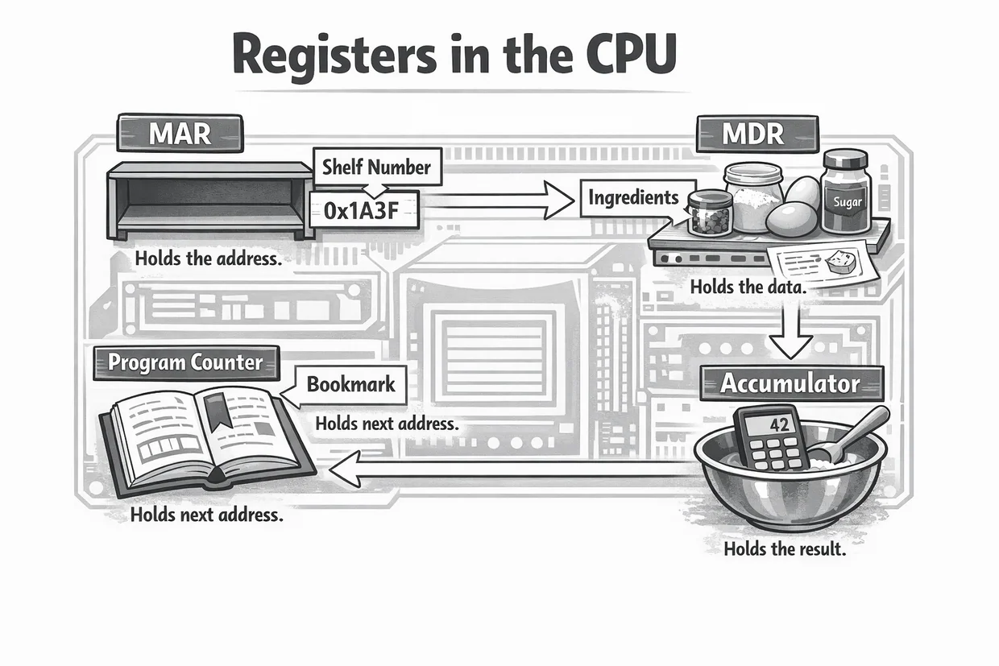
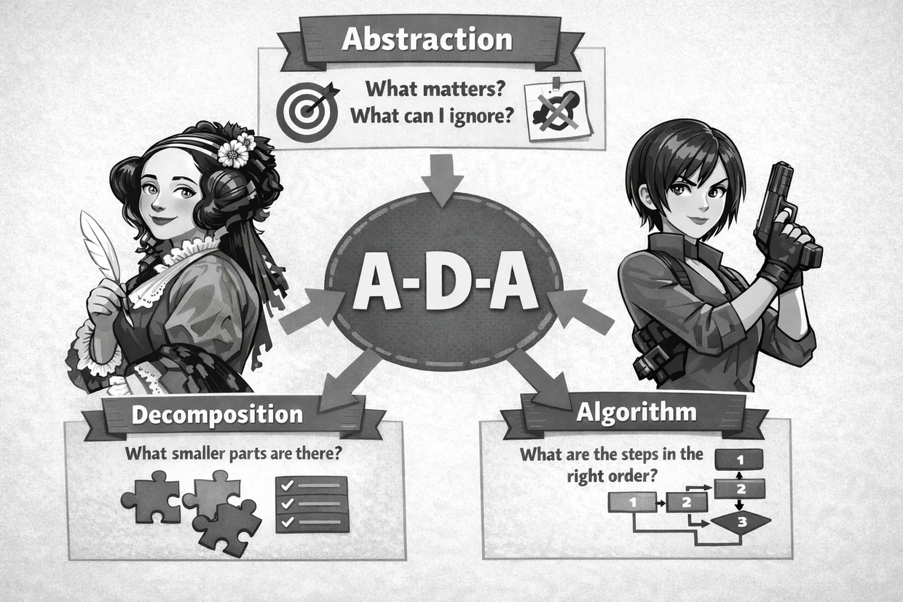

1 · LAST LESSON · L112
How does merge sort combine two sorted lists?
Four retrieval questions
How does merge sort combine two sorted lists?
Which storage technology does a DVD use?
“FROM is the clause that specifies the required output columns.” Correct this. Explain why.
Code has a missing bracket. “A syntax error is a wrong result from code that follows the language's rules.” Correct this. What needs fixing?
Check your responses
Compare the next item in each list. Take the smaller. Repeat, then add any items left over.
A — Optical
A DVD is optical storage, read using laser light.
The table to get data from.
A syntax error breaks the language's rules and stops the affected code being translated or run. Fix it, then trace and test the logic.
One A3 mind map · 1.1–1.6
CPU · FDE · Registers

| Register | Purpose |
|---|---|
| MAR | Address of memory location |
| MDR | Data / instruction transferred |
| PC | Address of next instruction |
| Accumulator | ALU result |
Mini-whiteboards
Which register holds the address of the next instruction?
What is the difference between the ALU and Control Unit?
Which register holds the address being accessed in memory?
Pen and A3 mind map
Use key terms, examples and connections.
RAM · ROM · Cache · Secondary storage
| Primary memory | Secondary storage |
|---|---|
| RAM — volatile working memory | HDD — magnetic, moving parts |
| ROM — non-volatile instructions / firmware | SSD — solid-state flash |
| Cache — very fast, close to CPU | Optical — laser-read discs |
Compare volatility, capacity, durability and the reason for choosing each type.
Methods: place value · grouping in fours · logical shifts
| Denary | 8-bit binary | Hex |
|---|---|---|
| 19 | 00010011 | 13 |
| 67 | 01000011 | 43 |
| 142 | 10001110 | 8E |
ASCII · Unicode · Binary codes
| Character | ASCII code |
|---|---|
| G | 01000111 |
| H | 01001000 |
| I | 01001001 |
| ASCII | Unicode |
|---|---|
| Limited character set | Much wider repertoire |
| Use the supplied codes | Supports many scripts and emojis |
| One code per character | Storage depends on encoding |
Write each character code separately and in order. Do not add the codes together.
Mini-whiteboards
Convert denary 29 to 8-bit binary, then hexadecimal.
Add 00110101 + 00001011. Show every carry above its column.
What logical shift multiplies an unsigned binary number by four if no significant bits are lost?
Use G = 01000111, H = 01001000 and I = 01001001. Write the three ASCII codes for HIG in order.
Pen and A3 mind map
Use key terms, examples and connections.
LAN · WAN · Star · Mesh
Star: central switch is a single point of failure. Mesh: alternate routes need more links.
Four octets · Domain lookup · Internet connection
| IPv4 example | Validity |
|---|---|
| 192.168.4.25 | Valid: four octets in range |
| 300.4.1.5 | Invalid: octet above 255 |
| 10.20.30.40.50 | Invalid: five octets |
A router forwards traffic between networks; DNS resolves a domain name to an IP address.
Mini-whiteboards
A design studio connects devices in one building. Give two reasons this is a LAN.
Explain a mesh advantage using because… therefore…, then describe a drawback compared with star.
Sequence DNS: domain request → cached lookup → DNS record → IP returned. Which device receives the IP?
Pen and A3 mind map
Use key terms, examples and connections.
Match each threat to a proportionate defence
| Threat | Protection |
|---|---|
| Malware | Anti-malware tools |
| Brute force | Lockout / authentication |
| Unwanted traffic | Firewall |
| Stolen files | Encryption |
Mini-whiteboards
How does a firewall help protect a network?
Why is encryption useful when a storage device is stolen?
Pen and A3 mind map
Use key terms, examples and connections.
Operating system responsibilities · recognisable examples
| OS function | Responsibility |
|---|---|
| Memory | Allocate RAM |
| Processor | Schedule tasks |
| Users | Account permissions |
| Files | Organise files |
| Peripherals | Manage drivers |
Plaintext · Key · Ciphertext
Encryption cannot replace backups. Decryption needs the correct key.
Mini-whiteboards
State the general purpose of utility software, without just naming a specific utility.
Encryption can make intercepted data meaningless without a key. Why does it not stop interception?
Pen and A3 mind map
Use key terms, examples and connections.
Benefits · Drawbacks · Stakeholders · Judgement
| TIER | How to develop the response |
|---|---|
| T · Technology | Identify the decision and context |
| I · Issues | Explore an ethical AND an environmental issue |
| E · Effects | Explain benefits and drawbacks for more than one stakeholder: because / therefore |
| R · Result | Give a supported judgement that weighs the trade-offs |
Develop the reasoning on both sides; four isolated facts are not an extended discussion.
Mini-whiteboards
A town replaces printed community notices with online notices. Explain one benefit to organisers and a drawback to residents, including why each matters.
Develop one ethical and one environmental effect of that change. How would they affect your judgement?
A local sports club stores contact numbers. Name a data-protection law and two practical ways to comply.
Pen and A3 mind map
Use key terms, examples and connections.
Your second A3 mind map · 2.1–2.5
Abstraction · Decomposition · Algorithmic thinking

| Technique | Example from your booklet |
|---|---|
| Abstraction | Bus app: keep stops and times, ignore seat colour |
| Decomposition | Game: controls, scoring, collisions and menu |
| Algorithmic thinking | Login: input → check → accept/reject |
Follow variable changes in execution order
x = 8
while x > 1
print(x)
x = x - 2
endwhileShow each split and merge, not only the answer
Each merge produces a sorted group. Do not join unsorted groups and sort them afterwards.
Mini-whiteboards
Trace the displayed loop: write each printed value and the first value that makes its condition false.
Merge sort [8, 1, 5, 3]. Show singles, sorted pairs and final ordered list.
Explain why binary search needs an already sorted list and what could go wrong otherwise.
Pen and A3 mind map
Use key terms, examples and connections.
Sequence · Selection · Iteration
| Construct | Example |
|---|---|
| Sequence | Statement order |
| Selection | if / else |
| for | Counted repetition |
| while | Condition-controlled repetition |
Function · parameter · argument · return value
function area(width, height)
return width * height
endfunction
floorSpace = area(7, 4)OCR ERL · Read, convert, test, then close
readings = open("weather.txt")
while NOT readings.endOfFile()
value = int(readings.readLine())
if value >= 15 then
print(value)
endif
endwhile
readings.close()| Step | Reason |
|---|---|
| open(...) | Access external file |
| readLine() | Get one line as text |
| int(...) | Convert text to integer |
| endOfFile() | Test for completion |
| close() | Release file |
OCR ERL · Count qualifying sensor readings
count = 0
for i = 1 to 5
reading = int(input("Temperature"))
if reading > 20 then
count = count + 1
endif
next i
print(count)| Programming feature | Effect |
|---|---|
| for i = 1 to 5 | Five readings |
| if reading > 20 | Test each reading |
| count = count + 1 | Record a matching input |
| print(count) | Output final number |
Mini-whiteboards
Correct the comparison: if score >= 10 AND <= 40 then
A function takes length but asks for fresh input and prints its calculation. Identify two mistakes.
Plan an algorithm: read test scores until −1; accept only 0–20; total valid scores. Identify the input, loop, test, update and output.
Explain precisely what int() does to a numeric line read from a text file.
Pen and A3 mind map
Use key terms, examples and connections.
Valid · Invalid · Boundary · Validation
| Input | Classification |
|---|---|
| 37 | Normal |
| 20, 60 | Valid boundary |
| 19, 61 | Invalid range |
| hello | Invalid type |
Mini-whiteboards
For the range 20–60 inclusive, give both valid boundaries and one invalid value.
How do validation and verification differ? Do they guarantee the information is true?
Which includes the top boundary: age < 60 or age <= 60? Explain.
Pen and A3 mind map
Use key terms, examples and connections.
AND · OR · NOT
| A | B | A AND B |
|---|---|---|
| False | False | False |
| False | True | False |
| True | False | False |
| True | True | True |
Mini-whiteboards
Evaluate NOT (True AND False).
A user needs to be 16 or older AND have parental consent. Write two complete comparisons joined with AND.
Why is pin == '9999' OR '8888' incomplete? Rewrite it correctly.
Pen and A3 mind map
Use key terms, examples and connections.
Compiler · Interpreter · Development environment
Mini-whiteboards
Identify two IDE tools and explain what each enables a programmer to do. Do not just repeat the name.
Which tool pauses at a chosen line, and what can a debugger then inspect?
Compare how a compiler and an interpreter translate programs.
Pen and A3 mind map
Use key terms, examples and connections.
Binary search works correctly on any unsorted list.
Circle one secure branch and one branch to revisit.